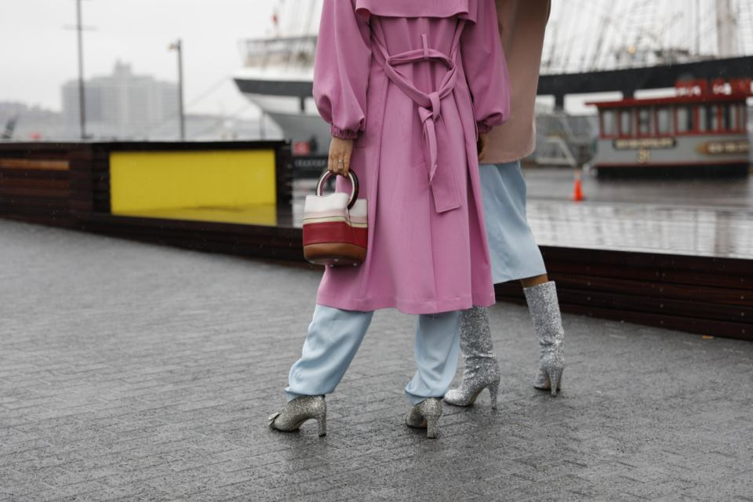

<!--
  Editorial split block (image + text, reversible).
-->

<!-- ================= EDITORIAL ================= -->
  <section class="section">
    <div class="container split">
      <div class="split__media reveal">
        
      </div>
      <div class="split__text reveal">
        <span class="eyebrow">The edit</span>
        <h2>A quieter kind of statement</h2>
        <p>
          This season we worked with heavy cottons, brushed wool and recycled cashmere —
          pieces that look better after a hundred wears than on the first day.
        </p>
        <p>
          Every garment is cut in limited runs of 80, so the people who make them aren't
          rushed, and you won't meet yourself on every street corner.
        </p>
        <a href="../categories.html" class="btn">Explore the edit</a>
      </div>
    </div>
  </section>
